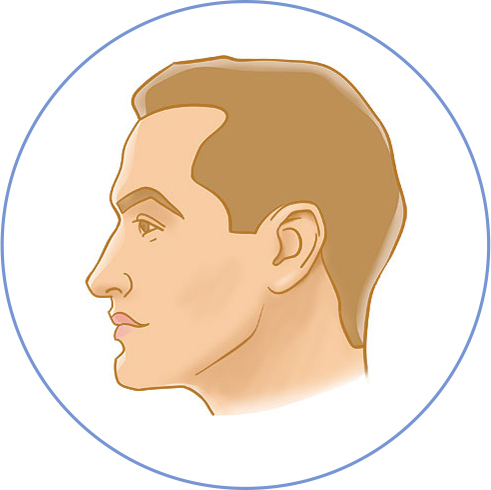

Волосы
волосы
Нажмите на интересующий пункт в списке:
Психика
психика
Нажмите на интересующий пункт в списке:
- Нарушение ясности сознания, ориентировки в месте
- Обманы восприятия
- Паранойя
- Суицидальные мысли
- Депрессия
- Снижение памяти, мыслительной активности, способности к запоминанию, рассеянное внимание
- Слабость, вялость, быстрая утомляемость
- Частая смена настроения
- Нарушение сна (бессонница)
- Раздражительность, придирчивость, гневливость, агрессивность
- Тревожность, дискомфорт, внутреннее напряжение, беспокойство, фобии, страх, паника
Кожа лица
кожа лица
Нажмите на интересующий пункт в списке:
Губы
губы
Нажмите на интересующий пункт в списке:
Зубы
Рот
рот
Нажмите на интересующий пункт в списке:
Нос
нос
Нажмите на интересующий пункт в списке:
Глаз
глаз
Нажмите на интересующий пункт в списке:
Лоб
лоб
Нажмите на интересующий пункт в списке:
Головная
боль
боль
Головная боль
Нажмите на интересующий пункт в списке:
Ухо
Ухо
Нажмите на интересующий пункт в списке:
Височная
область
область
Висок
Нажмите на интересующий пункт в списке:
Затылок
Затылок
Нажмите на интересующий пункт в списке:
Кожа головы
Кожа головы
Нажмите на интересующий пункт в списке: